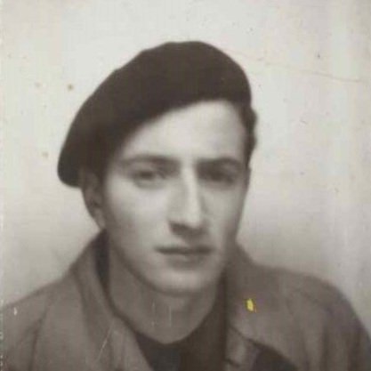
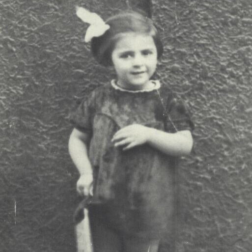
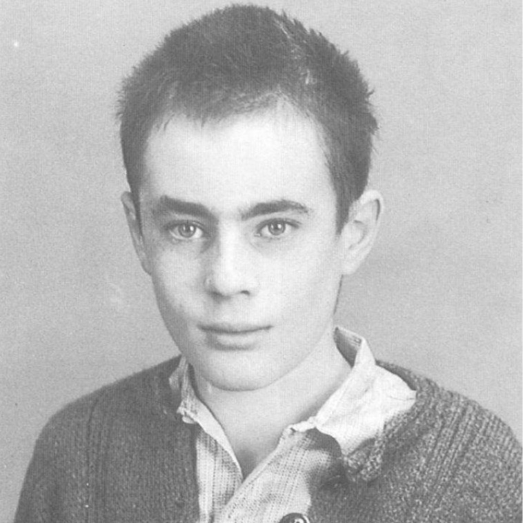
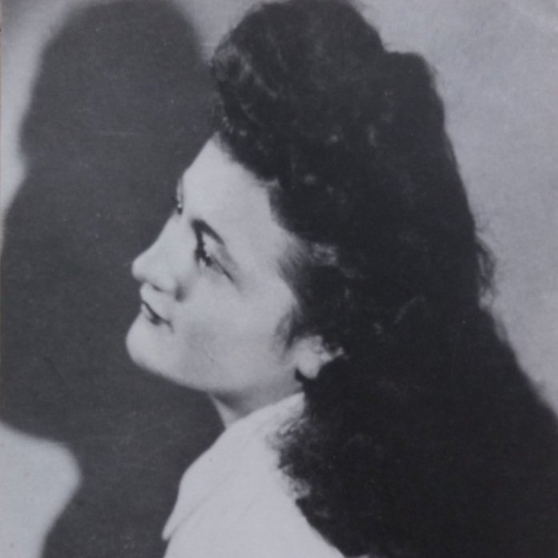
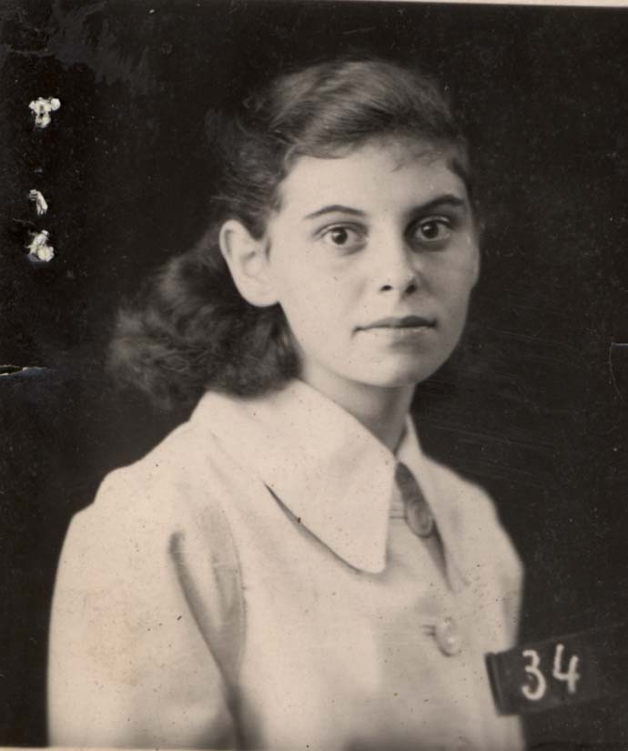
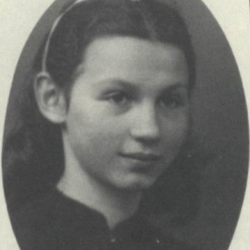
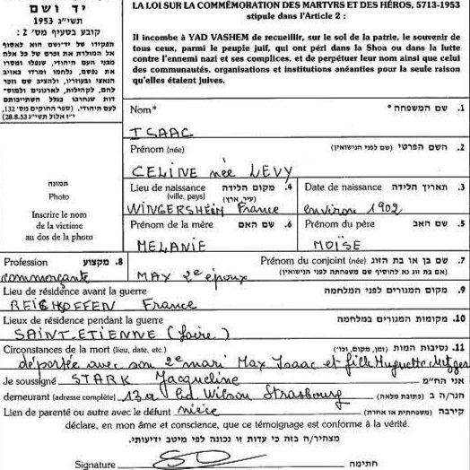
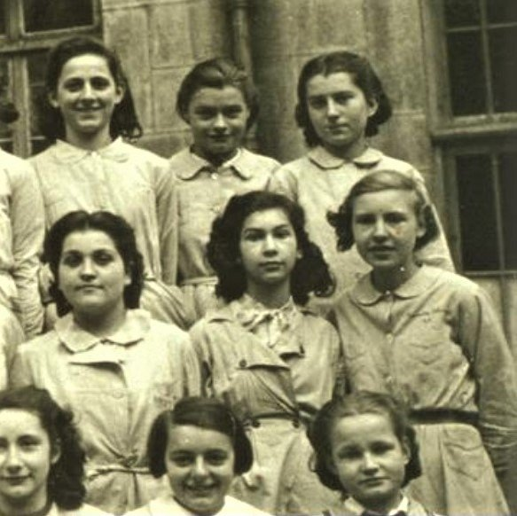
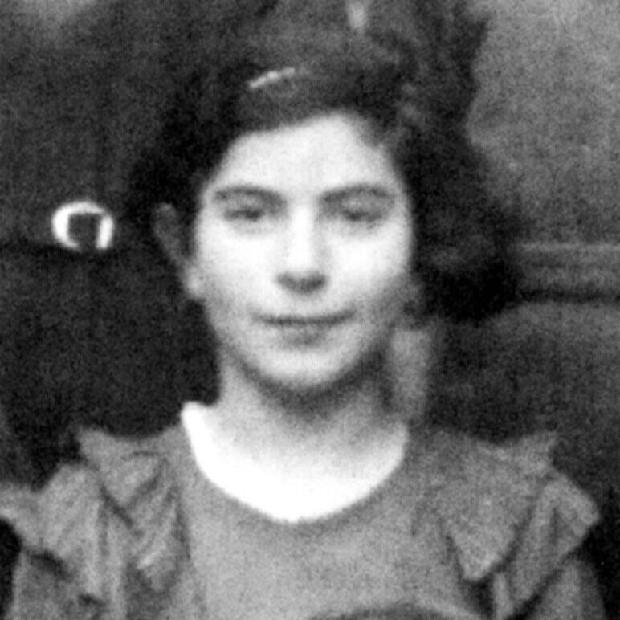
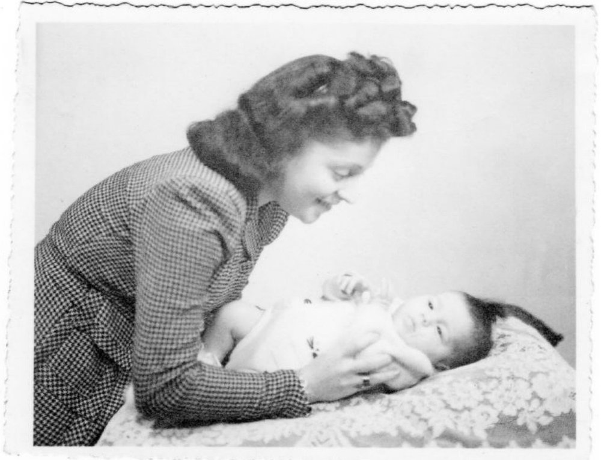

Département de la Loire
Les biographies
22 fiches liées à la Loire.

Alain Grossmann

André Israel

Andrée Halimi

Augustine Bamvelzveig

Claude Albert Benmeleh

Claude Hirsch (S)

Denise Caroline Lévy

Enfants Dreyfus

Enfants Dreyfuss
Enfants Heimer

Enfants Jaffé

Enfants Lévy
Enfants Lewy

Enfants Rosenkovitch Dzviga

France Klain

Hariette Nordmann

Huguette Henriette Metzger (Isaac)
Irène Stern (Sztern)

Lise Lehmann

Micheline Francfort [alias Michèle Michard] (S)

Simon Igel (S)
